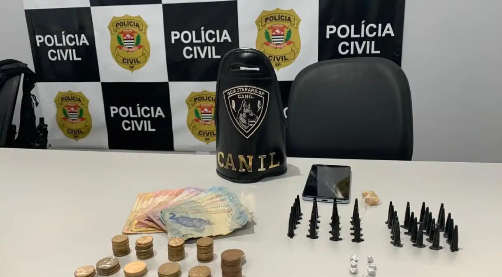
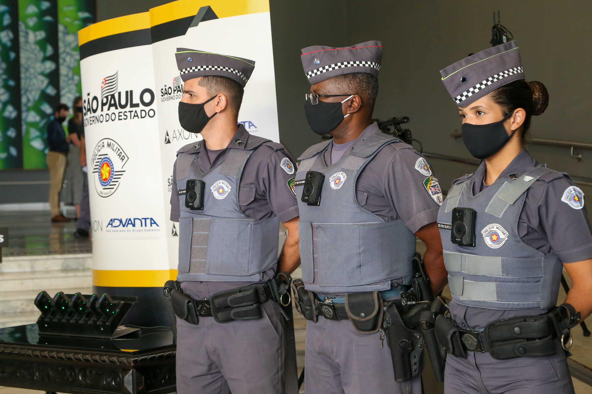

Polícia de SP prende 15 suspeitos de tráfico de drogas no interior do estado
Operação aconteceu nesta terça-feira (30); cinco suspeitos foram presos em flagrante por tráfico.

A Polícia Civil prendeu cerca de 15 suspeitos de integrarem uma quadrilha especializada no tráfico de drogas nesta terça-feira (30). Os mandados de busca, apreensão e prisão da megaoperação, denominada de Pente Fino, aconteceram na região de Itapeva, em Sorocaba, no interior de São Paulo.
Os criminosos já estavam sendo monitorados pela polícia há meses, e as investigações apontam que eles possam estar envolvidos em outra facção, que comanda o crime organizado.
O caso foi encaminhado à Justiça depois do início das investigações, que começaram em março. Após isso, foram expedidos 29 mandados de busca e apreensão e outros 22 de prisão.
Segundo a Secretaria de Segurança Pública de São Paulo, alguns suspeitos foram encontrados no município de Itapeva, enquanto um casal foi preso em Itararé. A ação foi realizada pela Delegacia de Investigações sobre Entorpecentes e teve apoio da PM e da Guarda Civil Municipal.
Nos locais apontados, as equipes vistoriaram os endereços e apreenderam diversas porções de drogas. Ainda, cinco pessoas foram presas em flagrante por tráfico. As investigações seguem a cargo da Polícia Civil.
